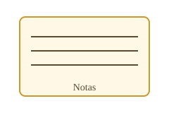

Teoría Avanzada
Unidad II: Arquitectura del Microprocesador e Interfaces
Análisis del modelo de procesamiento clásico y los circuitos integrados de soporte para la comunicación con periféricos.
2.1.1 Arquitectura Von Neumann
Es la base del microprocesador tradicional (como la familia Intel x86). Su principio fundamental establece que tanto las instrucciones del programa como los datos de las variables comparten el mismo espacio de memoria física y se transportan a través de los mismos buses.
Cuello de botella: Al compartir el bus, la CPU no puede leer una instrucción y escribir un dato al mismo tiempo, lo que limita la velocidad de procesamiento.
2.2 Dispositivos de Interfaz Clave
Un microprocesador puro no puede controlar el hardware externo directamente; requiere de chips periféricos de soporte en la placa base:
PPI 8255 (Interfaz Periférica Programable): Chip diseñado para dotar a la CPU de puertos paralelos de Entrada/Salida. Permite configurar pines por software para leer botones o controlar actuadores y pantallas.
PIC 8259 (Controlador Programable de Interrupciones): Administra las interrupciones por hardware de los periféricos. Cuando un dispositivo externo requiere atención urgente, el 8259 evalúa la prioridad y le ordena a la CPU pausar su tarea actual para atender el evento.
Laboratorio
Unidad III: Programación en Ensamblador (EMU8086)
Guía de desarrollo de scripts y simulación de instrucciones directas a la CPU.
Tutorial Práctico del Emulador
Utiliza el entorno EMU8086 para compilar, analizar los registros internos (AX, BX, CX, DX) y observar de forma interactiva el flujo de las instrucciones de bajo nivel.
Caso Práctico 1: Operación Aritmética y Descomposición Numérica
Descripción del Programa: Este script ejecuta la adición de dos valores inmediatos asignados a los registros generales y procesa el resultado para su posterior despliegue en la consola del sistema.
Análisis de la Lógica del Código:
Inicialmente se cargan los valores numéricos mediante las instrucciones MOV AL, 15 (0Fh) y MOV BL, 10 (0Ah) para efectuar la suma con ADD AL, BL. El acumulador almacena un resultado equivalente a 25 (19h).
Para representar este valor en un monitor de caracteres clásico, se aplica una técnica de descomposición matemática dividiendo el total entre diez mediante DIV CL (con CL=10). Esto aísla el cociente en el registro AL (Decenas = 2) y el residuo en AH (Unidades = 5).
Finalmente, se efectúa un ajuste sumando 48 (30h) a ambos componentes para transformarlos a sus valores correspondientes en la tabla ASCII ('2' y '5'), invocando el servicio de salida de video mediante la interrupción general del DOS INT 21h con el servicio de impresión AH = 02h.

Caso Práctico 2: Segmentación de Memoria y Manejo de Cadenas de Texto
Descripción del Programa: Demostración práctica de la separación estructural entre directivas de datos y bloques funcionales de código utilizando el direccionamiento efectivo de memoria RAM.
Análisis de la Lógica del Código:
El script divide de forma explícita el entorno. En el Bloque de Datos, se inicializa la variable mensaje en la memoria a través de la directiva de asignación de bytes DB, incorporando obligatoriamente el carácter especial de terminación $, el cual funciona como bandera de parada para el bus de datos en los sistemas DOS.
En el Bloque de Código, se configura el registro acumulador superior mediante MOV AH, 09h, instrucción especializada en la salida de cadenas completas de texto. Posteriormente, se utiliza la directiva MOV DX, OFFSET mensaje, cargando en el registro de datos la dirección física exacta de la memoria del computador donde reside el inicio del string antes de ejecutar la interrupción de hardware INT 21h.

Análisis de Ingeniería
Validación Técnica y Control de Ejecución
Desglose de los estados internos del hardware simulado e interrupciones del sistema operativo de disco.
Anatomía del Banco de Registros Internos
Durante la simulación paso a paso (Single Step), se verificó la manipulación directa de la arquitectura interna del Intel 8086 mediante tres categorías de registros esenciales:
- Registros de Propósito General (AX, BX, CX, DX): Operan en bloques de 16 bits, subdivididos en secciones de 8 bits (High/Low) para optimizar operaciones aritméticas complejas y conteos de ciclos.
- Punteros de Segmento (CS, DS, SS, ES): Delimitan físicamente las fronteras de memoria asignadas al programa, evitando colisiones entre opcodes de código y buffers de variables dinámicas.
- Puntero de Instrucción (IP): Indica en tiempo real la dirección de desplazamiento de la próxima instrucción lógica que será procesada por la ALU.
Servicios del Sistema Operativo Invocados
La comunicación con la consola simulada se gestiona a través del vector de interrupciones de software controladas por el sistema operativo mediante la instrucción INT 21h. Los servicios implementados se detallan a continuación:
| Servicio (AH) | Función de Hardware | Registro de Entrada | Aplicación en Reporte |
|---|---|---|---|
02h |
Salida de Carácter Estándar | DL (Código ASCII) |
Impresión individual de los caracteres numéricos convertidos. |
09h |
Salida de Cadena de Texto | DX (Dirección Offset) |
Despliegue del buffer completo en RAM hasta el delimitador $. |
Flujo Dinámico: El Ciclo de Máquina en EMU8086
Al procesar las directivas del laboratorio en modo unitario, la Unidad de Control del microprocesador ejecuta de forma cíclica las siguientes fases de bajo nivel:
- Prebúsqueda (Fetch): La CPU extrae el byte operativo (opcode) alojado en la dirección física combinada por los registros
CS:IPdesde la memoria RAM. - Decodificación (Decode): Los decodificadores internos de la Unidad de Control traducen el byte binario bruto (ej.
B4 09) en una instrucción ejecutable por el procesador (MOV AH, 09h). - Ejecución (Execute): La ALU abre las compuertas lógicas de los buses internos, transfiere los datos hacia los acumuladores destino y actualiza de inmediato el registro de banderas (Flags).